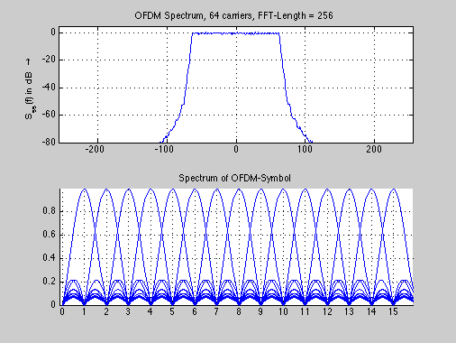

close all;
clear all;
ofdm.n_car = 64;
ofdm.n_guard = 64;
ofdm.n_fft = 256;
psd_fft = 512;
psd_window = hanning(psd_fft);
f_A = 512e6;
s_sym = (1/sqrt(2))*(sign(randn(2^14,1)) + j * sign(randn(2^14,1)));
r=0.25;
ofdm.n_cos = round(r*(ofdm.n_guard+ofdm.n_fft));
signal = ofdm_mod(s_sym,ofdm);
[LDS,f_vec] = psd(signal,psd_fft,f_A,psd_window);
f_vec = f_vec - round(max(f_vec)/2);
LDS = [LDS((psd_fft / 2 + 1):psd_fft);LDS(1:(psd_fft / 2))];
LDS_dB = 10 * log10(LDS * (ofdm.n_car/ofdm.n_fft));
subplot(2,1,1);
plot(f_vec/1e6,LDS_dB);
ylabel('S_{ss}(f) in dB \rightarrow');
grid;
axis([-max(f_vec/1e6) max(f_vec/1e6) -80 5]);
title('OFDM Spectrum, 64 carriers, FFT-Length = 256');
N_carr = 16;
subplot(2,1,2);
hold on;
for i=2:N_carr,
sym1(i)=s_sym(i,1);
sig1 = ifft(sym1,N_carr);
sig1_w = [sig1,zeros(1,N_carr*7)];
spec1_w = fft(sig1_w);
omega = ([0:8*N_carr-1].')/8/N_carr*2;
plot(abs(spec1_w),'b-');
sym1(i)=0;
end
grid;
axis([0 128 -Inf Inf]);
set(gca,'XTick',[1:8:256]);
set(gca,'XTickLabel',([0:1:31]));
title('Spectrum of OFDM-Symbol');
hold off;
